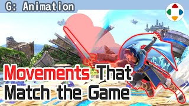
速览
《大乱斗》是从侧面看的游戏，所以重视侧面剪影好看；但开发中常有这样的事。先讲前提：各种攻击动作上附加的攻击判定，并不直接以剑或拳的形状附着，而是覆盖更广的范围。《大乱斗》做激烈快速的坐标移动，是攻击判定偏大的游戏；不这样，攻击很难命中，会成为压力很大的游戏。接下来是动作制作现场的话题：攻击范围没通过中线，所以攻击难以命中——当然会请他们修正。严格来说，无论动作在攻击中通过哪里，策划都可以通过配置攻击判定让它命中，但外观与命中会差得更大。外观与判定大小有一定差异，可以为了游戏乐趣而割舍；但连动作位置都不同，破绽就更大。另外，攻击判定出现的时间、似乎能干净命中时的姿势很重要：这里会有顿帧，会留在眼里；如果是最后一击，画面会「啪」地停住，此时攻击感薄弱的姿势不好。所以例如挥剑时，有时在稍挥出的位置才出攻击判定。制作攻击动作时，始终意识攻击判定的发生与范围很重要。严格来说游戏调整是策划做的，动作方可能觉得不归自己管；但动作对游戏手感影响极大，所以应意识游戏本身来做。
1. 前提：攻击判定 0:03
《大乱斗》是从侧面看的游戏，重视侧面剪影；但开发中常有这样的事。
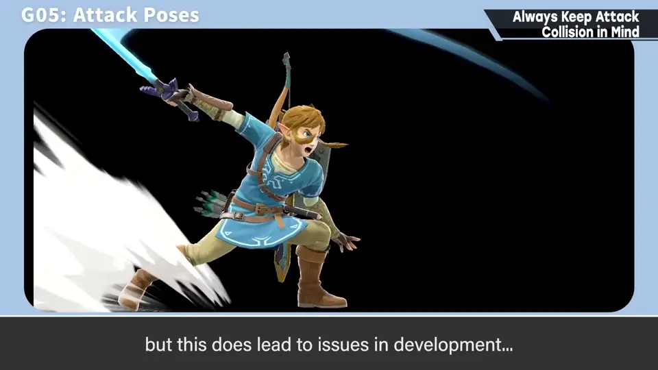
先讲前提：各种攻击动作上附加的攻击判定，并不直接以剑或拳的形状附着，而是覆盖更广的范围。
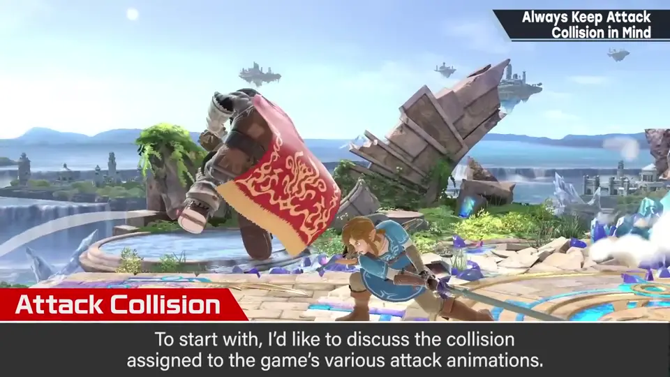
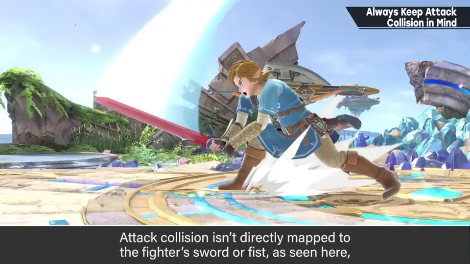
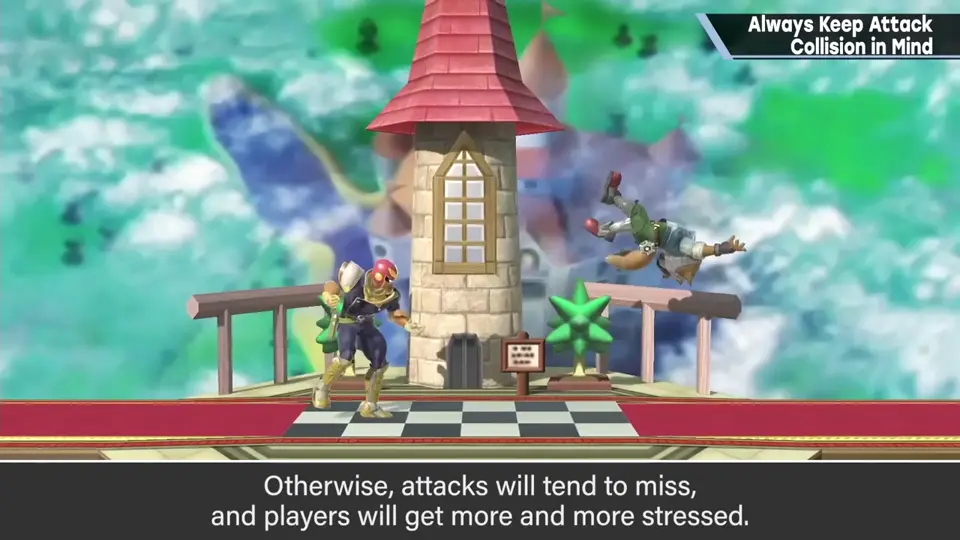
2. 没过中线 0:47
动作制作现场常见：攻击范围没通过中线，所以攻击难以命中。当然会请他们修正。
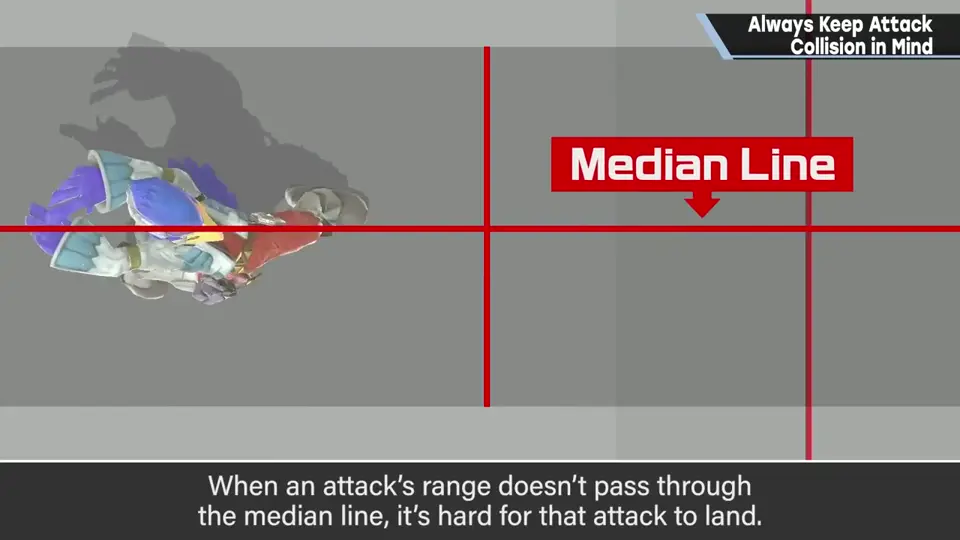
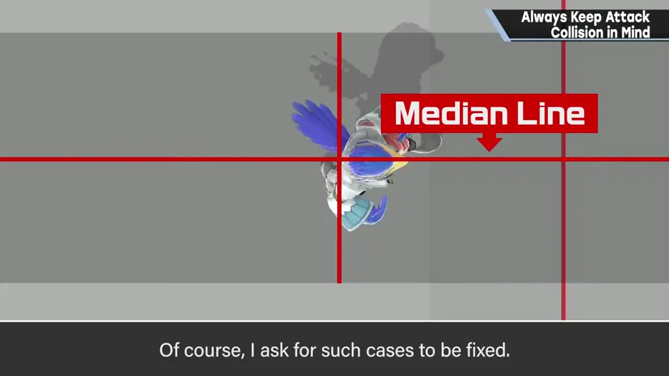
3. 外观与判定 1:01
严格来说，无论动作在攻击中通过哪里，策划都可以靠配置攻击判定让它命中。
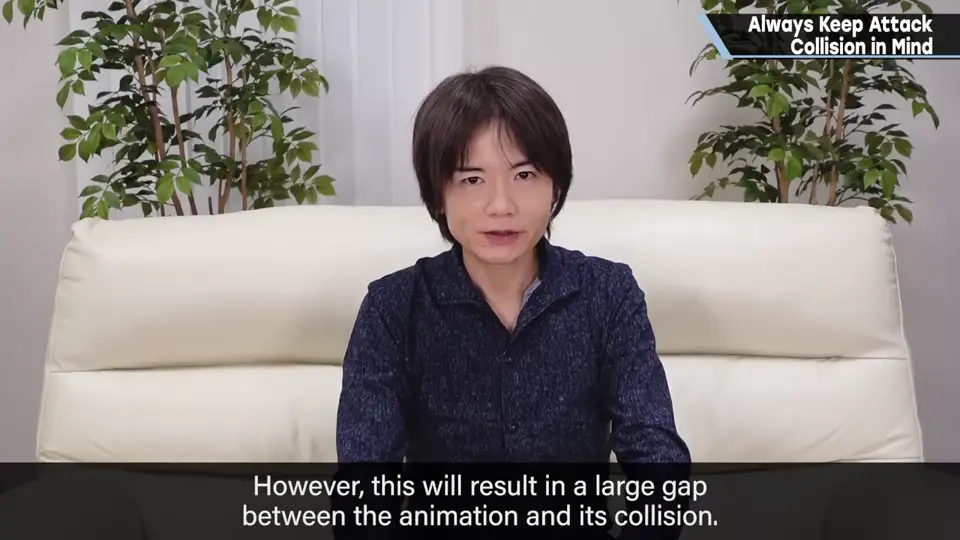
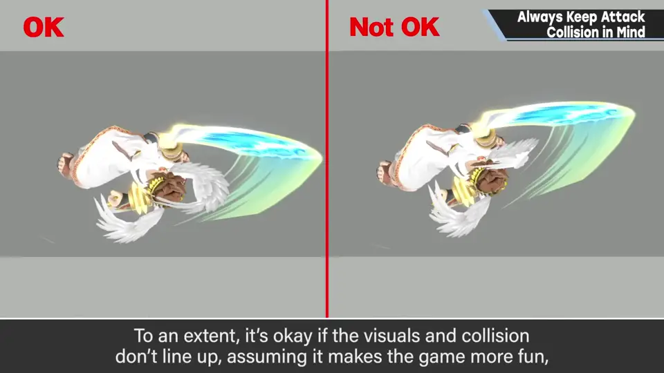
4. 判定时机与姿势 1:30
攻击判定出现的时间、似乎能干净命中时的姿势很重要：这里会有顿帧，会留在眼里。
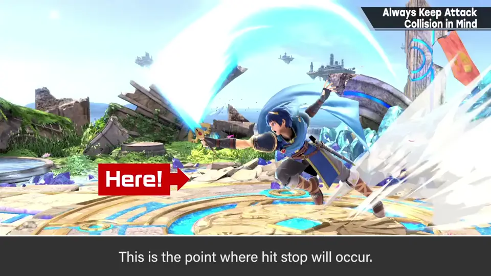
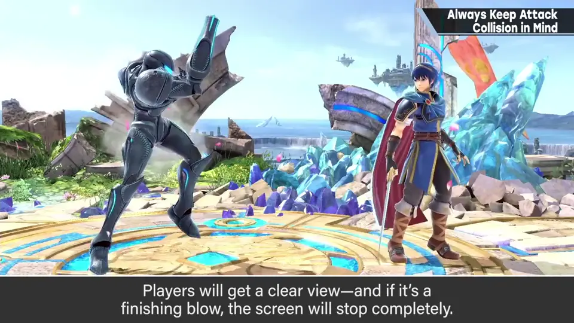
如果是最后一击，画面会「啪」地停住。此时攻击感薄弱的姿势不好。
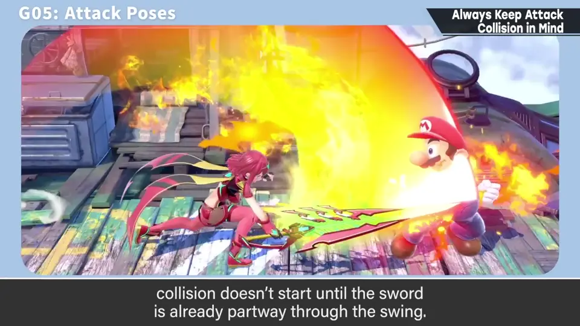
5. 意识游戏本身 2:04
制作攻击动作时，始终意识攻击判定的发生与范围很重要。
严格来说游戏调整是策划做的，动作方可能觉得不归自己管；但动作对游戏手感影响极大，所以应意识游戏本身来做。
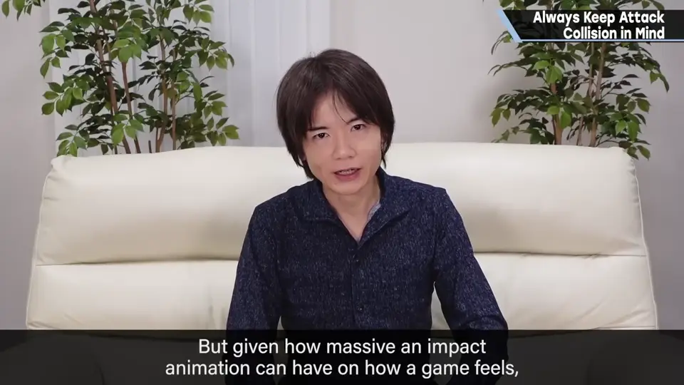
自测题
1. 为什么《大乱斗》的攻击判定偏大？
坐标移动激烈快速，判定小就很难命中、压力大。 0:40
2. 攻击没过中线时，为什么不只靠策划调判定？
外观与命中会差得更大；连动作位置都不同，破绽更大。 1:20
3. 为什么挥剑时会在稍挥出的位置才出判定？
判定时有顿帧，那一刻要是攻击感强的姿势。 1:55